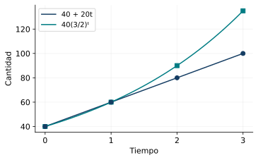
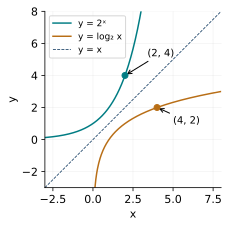
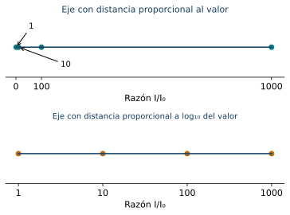
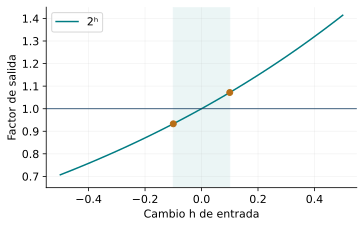

Funciones exponenciales y logarítmicas
← Funciones polinómicas, racionales y radicales · Índice del libro · Siguiente →
Dos cultivos empiezan con la misma cantidad de organismos. Durante cada hora, uno añade veinte organismos y el otro aumenta en un veinte por ciento. En la primera hora sus cantidades pueden coincidir. Después, el porcentaje actúa sobre una población que ha cambiado y la distancia entre ambos crece. Para describirla necesitamos conservar la operación que se repite: una suma en el primer cultivo y una multiplicación en el segundo.
Las sucesiones geométricas ya permitieron estudiar esa repetición por períodos enteros. Las funciones exponenciales extenderán la pregunta a tiempos intermedios bajo una hipótesis precisa sobre el factor de cambio. Los logaritmos resolverán la pregunta inversa: cuánto tiempo, o qué exponente, hace falta para alcanzar una cantidad. El dominio y las unidades seguirán acompañando cada operación.
Repetir un factor
Si una cantidad inicial \(A_0>0\) se multiplica por el mismo factor \(q>0\) en cada período, después de \(n\) períodos vale \(A_n=A_0q^n\). La igualdad se obtiene aplicando la multiplicación sucesivamente. El cociente \(A_{n+1}/A_n=q\) expresa la hipótesis del modelo. Si \(q=1+r\), el número \(r\) es la tasa relativa por período: un aumento del veinte por ciento corresponde a \(q=1{,}20\), y una disminución del veinte por ciento a \(q=0{,}80\).
La unidad de tiempo forma parte del parámetro: un factor mensual describe lo que ocurre en un mes. Para usar otra unidad contamos cuántos periodos de referencia han transcurrido. Si cada periodo dura \(T\) unidades, la regla se escribe \(A(t)=A_0q^{t/T}\); interpretar tiempos intermedios requiere extender la misma ley multiplicativa a esas duraciones.
Podemos preparar esa extensión dividiendo un periodo en \(n\) partes iguales. El factor de cada parte debe producir \(q\) al repetirse \(n\) veces, por lo que elegimos la raíz positiva \(q^{1/n}\); repetirlo \(m\) veces da \(q^{m/n}\). Recuperamos así las potencias racionales estudiadas antes. Para tiempos reales, la construcción por aproximaciones racionales y completitud conserva esos valores y su orden: con base mayor que uno se toma la menor cota superior apropiada, para base entre cero y uno se usa el recíproco y para base uno se mantiene el valor constante. El apéndice desarrolla esa construcción y demuestra las leyes reales de la tabla siguiente. Su aplicación a un cultivo o a un saldo conserva, además, la hipótesis de cambio multiplicativo uniforme del modelo.
Problema 1. Una suma y un factor en los datos
Las cantidades de dos procesos, en los tiempos \(0,1,2,3\), son respectivamente \(40,60,80,100\) y \(40,60,90,135\). Encuentra una regla afín para el primero y una exponencial para el segundo. Explica qué suponen esas reglas.
Solución. En la primera lista las diferencias consecutivas valen veinte, de modo que \(L(n)=40+20n\) reproduce los cuatro datos. En la segunda, los cocientes valen \(60/40=90/60=135/90=3/2\); la regla \(E(n)=40(3/2)^n\) los reproduce. En \(n=1\) ambas dan sesenta. En \(n=2\) el factor del segundo proceso actúa sobre sesenta y produce noventa, mientras la suma fija produce ochenta. Mantener las reglas para tiempos posteriores supone que continúen la diferencia constante y el factor constante, respectivamente. Los cuatro datos respaldan esa elección sobre las observaciones y dejan abierta su validación futura.

Problema 2. Cambiar el período de referencia
Una cantidad aumenta por un factor de \(1{,}21\) cada dos horas. Bajo una ley multiplicativa uniforme, encuentra el factor por hora y escribe el modelo desde una cantidad inicial de cincuenta unidades.
Solución. Si \(q>0\) es el factor por hora, dos horas producen \(q^2=1{,}21=121/100\). La raíz positiva da \(q=11/10=1{,}10\). El modelo es \(A(t)=50(1{,}21)^{t/2}=50(1{,}10)^t\), con \(t\ge0\) medido en horas. Por ejemplo, en tres horas da \(50(11/10)^3=66{,}55\). La tasa por hora es diez por ciento. Se verifica que dos aumentos sucesivos del diez por ciento producen un aumento total del veintiuno por ciento. La elección de raíz positiva conserva el carácter de factor de una cantidad positiva.
Problema 3. Qué se decide entre dos mediciones
Un proceso duplica su cantidad en cada tiempo entero: los datos son \(A(n)=2^n\) para enteros \(n\ge0\). Compara dos propuestas para la cantidad en \(t=1/2\): unir los datos mediante segmentos o conservar el mismo factor para intervalos de igual duración.
Solución. El segmento entre \((0,1)\) y \((1,2)\) tiene altura \(1+t\), así que en \(1/2\) propone \(3/2\). Con factor uniforme para cada media unidad de tiempo, un factor positivo \(q\) repetido dos veces debe producir dos: \(q^2=2\). La altura intermedia es entonces \(\sqrt2\). Son valores distintos, pues \((3/2)^2=9/4>2\). Ambas propuestas pueden recorrer de manera continua los datos enteros; la segunda incorpora además la ley de factores iguales para duraciones iguales. Esa hipótesis adicional selecciona la interpolación exponencial.
Para exponentes racionales ya construimos \(b^{m/n}\) mediante potencias y raíces, con \(b>0\). Si \(b>1\), los valores racionales aumentan con el exponente. Para un real \(x\) definimos
\[b^x=\sup\{b^r:r\in\mathbb Q,\ r\le x\}.\]
El conjunto tiene elementos y está acotado superiormente por una potencia de exponente entero mayor que \(x\). La completitud de los reales proporciona el supremo. Si \(0<b<1\), definimos \(b^x=(1/b)^{-x}\); para \(b=1\) fijamos \(1^x=1\). Esta construcción conserva las potencias racionales y la ley \(b^{x+y}=b^xb^y\). El apéndice justifica esas propiedades, la continuidad y el recorrido positivo. La función exponencial de base \(b>0\) tiene regla \(x\mapsto b^x\) y dominio real.
Problema 4. Una transformación del decaimiento
Estudia dominio, recorrido y variación de \(f(x)=3-2(1/2)^{x-1}\). Calcula \(f(1)\) e interpreta la recta \(y=3\).
Solución. La potencia está definida y es positiva para todo real, de modo que el dominio es \(\mathbb R\). Al aumentar \(x\), la potencia de base \(1/2\) disminuye; multiplicarla por \(-2\) invierte el orden. Así, \(f\) es estrictamente creciente. Como la potencia recorre todos los reales positivos, \(f\) recorre \((-\infty,3)\). En \(x=1\) vale \(3-2=1\). Hacia entradas positivas grandes, \((1/2)^{x-1}\) puede hacerse arbitrariamente pequeño; por eso \(y=3\) es una asíntota horizontal y las alturas se acercan a ella por debajo. El valor tres es la cota superior del recorrido.
Propiedades de factores y potencias reales
| Propiedad | Fórmula y condiciones de uso |
|---|---|
| Factor por período | \(A_n=A_0q^n\) para \(A_0,q>0\) y períodos enteros \(n\ge0\). |
| Tasa relativa | \(q=1+r>0\); aumento si \(r>0\), decaimiento positivo si \(-1<r<0\). |
| Potencia de una suma | Para \(b>0\) y \(u,v\in\mathbb R\), \(b^{u+v}=b^ub^v\) y \(b^0=1\). |
| Recíproco y cociente | \(b^{-u}=1/b^u\) y \(b^{u-v}=b^u/b^v\), para \(b>0\). |
| Potencia de potencia | \((b^u)^v=b^{uv}\) para \(b>0\) y \(u,v\) reales. |
| Orden y recorrido | Si \(b>1\), \(b^x\) crece estrictamente; si \(0<b<1\), decrece estrictamente. En ambos casos recorre \((0,\infty)\). |
Pruebas. Véase «Construcción de las potencias reales» en el apéndice.
Recuperar el exponente
Si una población inicial de cien se duplica en cada período, alcanzar ochocientos exige resolver \(2^t=8\). El exponente buscado es tres. Para alcanzar trescientos necesitamos el exponente que produce tres a partir de dos. La función exponencial, estrictamente monótona y con recorrido positivo, garantiza que ese exponente existe y es único.
Para una base \(b>0\), \(b\ne1\), y un argumento \(y>0\), el logaritmo \(\log_b y\) es el único real \(x\) tal que \(b^x=y\). En particular,
\[\log_b y=x\quad\Longleftrightarrow\quad b^x=y.\]
La base indica qué familia de potencias utilizamos. El argumento es la cantidad positiva cuyo exponente buscamos. Para base diez escribiremos también \(\log y\). Otra base de uso frecuente es el número \(e\), que se obtiene como límite de las sumas
\[1+1+\frac1{1\cdot2}+\frac1{1\cdot2\cdot3}+\cdots+\frac1{1\cdot2\cdots n}.\]
Estas sumas crecen y están acotadas; el apéndice demuestra su convergencia y da una cota del resto. Su límite satisface \(2<e<3\) y se aproxima por \(2{,}71828\) con error menor que \(0{,}000005\). La exponencial natural tiene regla \(x\mapsto e^x\) y su inversa es el logaritmo natural, escrito \(\ln y=\log_e y\) para \(y>0\). Las leyes demostradas para cualquier base válida se aplican a esta base. Esta notación permitirá escribir las cadenas exponenciales de los capítulos siguientes.
En las aproximaciones con calculadora mantendremos expresiones exactas y una precisión declarada.
Problema 5. Leer cuatro logaritmos exactos
Calcula \(\log_4 8\), \(\log_{1/2}8\), \(\log_5 1\) y \(\log_{1/3}(1/9)\).
Solución. Como \(4^{3/2}=(\sqrt4)^3=8\), se tiene \(\log_4 8=3/2\). La igualdad \((1/2)^{-3}=8\) da \(\log_{1/2}8=-3\). Para cualquier base válida, \(b^0=1\), así que \(\log_5 1=0\). Finalmente, \((1/3)^2=1/9\) da \(\log_{1/3}(1/9)=2\). El signo del logaritmo depende de la posición del argumento respecto de uno y del sentido de variación de la base elegida.
Problema 6. Dos restricciones en una misma regla
Encuentra los dominios de \(f(x)=\log_3(5-2x)\) y \(g(x)=1/\log_3(x-1)\).
Solución. Para \(f\) se exige \(5-2x>0\), equivalente a \(x<5/2\). Su dominio es \((-\infty,5/2)\). Para \(g\), primero se exige \(x-1>0\), es decir, \(x>1\). Además, el denominador debe tener valor distinto de cero. La igualdad \(\log_3(x-1)=0\) equivale a \(x-1=3^0=1\), por lo que se excluye \(x=2\). El dominio es \((1,2)\cup(2,\infty)\). La primera condición permite evaluar el logaritmo; la segunda permite tomar su recíproco.
Problema 7. Una gráfica inversa y desplazada
Describe dominio, recorrido, variación y cero de \(h(x)=\log_2(x-1)+3\). Relaciona sus puntos con los de \(y=2^t\).
Solución. Se exige \(x>1\). El logaritmo de base dos es estrictamente creciente y recorre \(\mathbb R\), así que \(h\) conserva esas dos propiedades sobre su dominio. Si \((t,2^t)\) pertenece a la exponencial, intercambiar coordenadas da \((2^t,t)\) en el logaritmo. Después de desplazar una unidad la entrada y tres la altura obtenemos \((1+2^t,t+3)\) en \(h\). El cero cumple \(\log_2(x-1)=-3\), de donde \(x=1+2^{-3}=9/8\). Al acercarse \(x\) a 1 por la derecha, el argumento positivo se aproxima a cero y el logaritmo desciende por debajo de cualquier cota; la recta \(x=1\) es asíntota vertical.

Problema 8. Encontrar la base
Encuentra todas las bases válidas \(a\) que cumplen \(\log_a9=2\). Explica también las soluciones de \(1^x=1\).
Solución. La condición logarítmica equivale a \(a^2=9\) con \(a>0\) y \(a\ne1\). La raíz positiva da \(a=3\), que verifica \(3^2=9\). La ecuación \(1^x=1\), por su parte, se cumple para cada real \(x\) porque la potencia de base uno es constante. La definición de logaritmo requiere una potencia que determine un único exponente para cada salida positiva; las bases positivas distintas de uno proporcionan precisamente esa correspondencia inversa.
Propiedades del logaritmo como inversa
| Propiedad | Fórmula y condiciones de uso |
|---|---|
| Definición | \(\log_b y=x\) equivale a \(b^x=y\), para \(b>0\), \(b\ne1\), \(y>0\). |
| Base natural | \(e\) es el límite de las sumas indicadas; \(\ln y=\log_e y\) para \(y>0\), y \(e^{\ln y}=y\). |
| Valores básicos | \(\log_b1=0\) y \(\log_b b=1\), para una base válida. |
| Composiciones inversas | \(\log_b(b^x)=x\) para \(x\in\mathbb R\); \(b^{\log_b y}=y\) para \(y>0\). |
| Dominio y recorrido | \(\log_b:(0,\infty)\to\mathbb R\) es una biyección. |
| Intercambio de coordenadas | \((x,b^x)\) corresponde a \((b^x,x)\) en la gráfica inversa. |
Pruebas. Véase «Logaritmos, inversión y gráficas» en el apéndice.
Traducir productos a sumas
Si \(u=b^p\) y \(v=b^q\), entonces \(uv=b^{p+q}\). Recuperar el exponente de ese producto da \(\log_b(uv)=p+q=\log_bu+\log_bv\). La propiedad nace de la ley de las potencias y conserva las condiciones \(u,v>0\). Un cociente produce una diferencia de exponentes y una potencia produce un producto de exponentes.
Estas leyes permiten reorganizar cálculos y controlar su dominio. Cada logaritmo de una expresión tiene su propio argumento positivo. En particular, al expandir el logaritmo de un cuadrado conviene recordar que \(\sqrt{z^2}=|z|\): para \(z\ne0\), \(\log_b(z^2)=2\log_b|z|\). El valor absoluto conserva ambos signos posibles de \(z\) en el dominio original.
Problema 9. Reunir un cálculo exacto
Calcula \(\log_2 12+\log_2 8-\log_2 3\).
Solución. Los tres argumentos son positivos y comparten una base válida. Las leyes permiten reunirlos como \(\log_2(12\cdot8/3)=\log_2 32=5\). El resultado puede comprobarse sin aproximar los logaritmos intermedios: \(12\cdot8/3=32=2^5\).
Problema 10. Expandir conservando el dominio
Determina el dominio de \(F(x)=\log_3((x-2)^2)\) y escribe una expansión válida en todo ese dominio.
Solución. El cuadrado debe ser positivo, lo que equivale a \(x\ne2\). Para esas entradas, \((x-2)^2=|x-2|^2\) y \(|x-2|>0\). Por tanto \(F(x)=2\log_3|x-2|\) en \(\mathbb R\setminus\{2\}\). Por ejemplo, en \(x=1\) la regla original vale \(\log_31=0\) y la expandida da \(2\log_31=0\). La expresión \(2\log_3(x-2)\) corresponde solamente a la parte \(x>2\) del dominio; el valor absoluto permite mantener la expansión completa.
Problema 11. Cambiar de base sin cambiar el número
Expresa \(\log_4 7\) usando logaritmos de base dos y demuestra la igualdad obtenida.
Solución. Sea \(t=\log_4 7\). Entonces \(4^t=7\), y como \(4=2^2\), resulta \(2^{2t}=7\). Al tomar el logaritmo de base dos obtenemos \(2t=\log_27\). Así, \(\log_47=(\log_27)/2\). En general, para bases válidas \(b,c\) y \(y>0\), escribir \(y=b^{\log_b y}\) y tomar logaritmos de base \(c\) da \[\log_b y=\frac{\log_c y}{\log_c b}.\] El denominador tiene valor distinto de cero porque \(b\ne1\). Esta fórmula permite evaluar una base elegida mediante la base disponible en una calculadora.
Problema 12. Examinar una suma de argumentos
Compara \(\log_2(1+3)\) con \(\log_21+\log_23\) y explica qué operación corresponde a la suma de logaritmos.
Solución. La primera expresión es \(\log_24=2\). La segunda es \(0+\log_23=\log_23<2\), porque \(3<4\) y el logaritmo de base dos crece. La suma de logaritmos corresponde al producto de argumentos: \(\log_21+\log_23=\log_2(1\cdot3)\). El ejemplo localiza la operación que la ley permite reunir y muestra por cálculo exacto la diferencia entre ambas expresiones.
Propiedades algebraicas de los logaritmos
| Propiedad | Fórmula y condiciones de uso |
|---|---|
| Producto | \(\log_b(uv)=\log_bu+\log_bv\), con \(u,v>0\) y base válida. |
| Cociente | \(\log_b(u/v)=\log_bu-\log_bv\), con \(u,v>0\) y base válida. |
| Potencia | \(\log_b(u^r)=r\log_bu\), con \(u>0\), \(r\in\mathbb R\) y base válida. |
| Cuadrado | $_b(z^2)=2_bz$, con \(z\ne0\) y base válida. |
| Cambio de base | \(\log_b y=\log_c y/\log_c b\), con \(y>0\) y bases válidas \(b,c\). |
Pruebas. Véase «Leyes logarítmicas y conservación del dominio» en el apéndice.
Resolver una igualdad de exponentes o de cantidades
Una exponencial de base válida es inyectiva. La igualdad \(b^{U(x)}=b^{V(x)}\) equivale, en el dominio de las expresiones, a \(U(x)=V(x)\). Cuando las bases son potencias de una misma base, reescribirlas hace visible esa comparación. En otras ecuaciones conviene introducir una nueva variable positiva, como \(u=2^x\), y resolver primero en ella.
Con logaritmos, el primer paso consiste en reunir las condiciones de positividad de todos los argumentos. Las leyes se aplican dentro de ese dominio. Si la ecuación transformada admite varias raíces algebraicas, cada una debe examinarse en las condiciones originales. La sustitución final confirma que la cantidad y la operación descritas coinciden.
Problema 13. Dos bases comparables
Resuelve \(9^{x-1}=27^{x+1}\).
Solución. Ambas potencias se evalúan para todo real. Escribir \(9=3^2\) y \(27=3^3\) convierte la ecuación en \(3^{2x-2}=3^{3x+3}\). La inyectividad de base tres permite igualar exponentes: \(2x-2=3x+3\), de donde \(x=-5\). Los dos exponentes resultan \(-12\), por lo que ambas expresiones valen \(3^{-12}\). Las equivalencias justifican la unicidad.
Problema 14. Una cuadrática en una potencia positiva
Resuelve \(4^x-5\cdot2^x+4=0\).
Solución. La identidad \(4^x=(2^x)^2\) sugiere \(u=2^x>0\). La ecuación pasa a \(u^2-5u+4=(u-1)(u-4)=0\). Ambos candidatos son positivos: \(u=1\) y \(u=4\). Recuperar los exponentes da \(x=0\) y \(x=2\). Sustituir produce \(1-5+4=0\) y \(16-20+4=0\). Cada valor positivo de \(u\) corresponde a un único \(x\), así que estas son todas las soluciones.
Problema 15. Alcanzar un umbral por períodos completos
Una cantidad inicial de cien aumenta un ocho por ciento al final de cada período. ¿Cuál es el primer período completo en que supera doscientos? Expresa también el instante de igualdad en la interpolación exponencial.
Solución. Después de \(n\) períodos la cantidad es \(100(27/25)^n\). Superar doscientos equivale a \((27/25)^n>2\). Como la base es mayor que uno, equivale a \(n>\log_{27/25}2\). En la interpolación, la igualdad se alcanza en \(t=\log_{27/25}2\), aproximadamente \(9{,}0065\) períodos. Para decidir el entero basta el control exacto \(27^9<2\cdot25^9\) y \(27^{10}>2\cdot25^{10}\). La primera cantidad superior al umbral corresponde al período diez. La expresión logarítmica describe el instante interpolado; las comparaciones enteras certifican la decisión discreta.
Problema 16. Dos logaritmos y un candidato descartado
Resuelve \(\log_2(x-1)+\log_2(x-3)=3\).
Solución. Las dos condiciones de argumento dan \(x>3\). En ese dominio, la ecuación equivale a \(\log_2((x-1)(x-3))=3\), y por inversión a \((x-1)(x-3)=8\). Se obtiene \(x^2-4x-5=(x-5)(x+1)=0\). De los candidatos 5 y \(-1\), solo 5 pertenece al dominio. La comprobación da \(\log_24+\log_22=2+1=3\). La raíz \(-1\) hace negativos ambos argumentos originales, por lo que queda descartada antes de evaluar logaritmos reales.
Problema 17. Igualar argumentos dentro del dominio
Resuelve \(\log_3(x+2)=\log_3(2x-1)\).
Solución. Se exige \(x+2>0\) y \(2x-1>0\), cuya intersección es \(x>1/2\). La inyectividad del logaritmo permite escribir \(x+2=2x-1\) y obtener \(x=3\). Pertenece al dominio y produce argumento cinco en ambos miembros. Las dos funciones toman el mismo valor exactamente en esa entrada.
Propiedades para resolver ecuaciones
| Propiedad | Fórmula y condiciones de uso |
|---|---|
| Igual base exponencial | \(b^U=b^V\) equivale a \(U=V\), para base válida y exponentes reales definidos. |
| Igual base logarítmica | \(\log_bU=\log_bV\) equivale a \(U=V\), dentro de \(U,V>0\). |
| Incógnita exponencial | La sustitución \(u=b^x\) recorre exactamente \(u>0\) para base válida. |
| Recuperación de la entrada | \(A_0q^{t/T}=K\) da \(t=T\log_q(K/A_0)\), con \(A_0,K,T>0\) y \(q>0\), \(q\ne1\). |
Pruebas. Véase «Ecuaciones exponenciales y logarítmicas» en el apéndice.
El sentido del orden también depende de la base
La función logarítmica hereda la monotonía de su exponencial inversa. Para base mayor que uno, una cantidad mayor tiene logaritmo mayor. Para base entre cero y uno, una cantidad mayor requiere un exponente menor. Al resolver una desigualdad conservaremos tanto la condición positiva del argumento como ese sentido del orden.
Problema 18. Una base decreciente
Resuelve \(\log_{1/2}(x-1)\ge-2\).
Solución. El dominio exige \(x>1\). Como la base \(1/2\) produce una función decreciente, el logaritmo es al menos \(-2\) exactamente cuando el argumento es a lo sumo \((1/2)^{-2}=4\). Se obtiene \(0<x-1\le4\) y, por tanto, \(x\in(1,5]\). En el extremo cinco el logaritmo vale \(-2\) y se incluye; uno queda excluido por la positividad del argumento.
Problema 19. La base como parámetro
Para una base válida \(a\), resuelve \(\log_a(x+1)>\log_a(3-x)\) y distingue los casos posibles de \(a\).
Solución. Las condiciones de argumento se reúnen en \(-1<x<3\). Si \(a>1\), el orden de los logaritmos coincide con el de los argumentos: \(x+1>3-x\) equivale a \(x>1\). La solución es \((1,3)\). Si \(0<a<1\), el logaritmo invierte el orden y se exige \(x+1<3-x\), equivalente a \(x<1\). La solución es \((-1,1)\). En \(x=1\) los argumentos coinciden y la desigualdad estricta queda fuera. La clasificación cubre las dos familias de bases válidas.
Propiedades de monotonía y desigualdades
| Propiedad | Fórmula y condiciones de uso |
|---|---|
| Base creciente | Para \(b>1\), \(b^u<b^v\) equivale a \(u<v\); \(\log_bu<\log_bv\) equivale a \(u<v\) cuando \(u,v>0\). |
| Base decreciente | Para \(0<b<1\), \(b^u<b^v\) equivale a \(u>v\); \(\log_bu<\log_bv\) equivale a \(u>v\) cuando \(u,v>0\). |
| Umbral logarítmico | Para \(U>0\), \(\log_bU\le c\) equivale a \(U\le b^c\) si \(b>1\), y a \(U\ge b^c\) si \(0<b<1\). |
Pruebas. Véase «Orden exponencial y logarítmico» en el apéndice.
Modelar una escala de tiempo o de intensidad
Para reconocer un modelo exponencial conviene identificar qué magnitud se mide, qué unidad de tiempo se usa y por qué un factor constante resulta razonable. El factor puede estimarse desde dos mediciones positivas, pero la concordancia entre esos dos datos solo fija los parámetros del modelo elegido. Una tercera medición permite examinar su capacidad descriptiva. Las predicciones requieren además que las condiciones del proceso sigan sosteniendo el factor.
En otras situaciones se compara una cantidad con una referencia positiva y se toma el logaritmo de su razón. Así se obtiene una escala en la que factores iguales producen diferencias iguales. La razón es un número puro: sus unidades se cancelan porque cantidad y referencia se miden en la misma unidad.
Problema 20. Recuperar un modelo de decaimiento
Una cantidad vale doscientas unidades en \(t=0\) y cincuenta unidades en \(t=3\) horas. Bajo un modelo exponencial positivo, determina su regla y el tiempo de reducción a la mitad.
Solución. Escribimos \(A(t)=200q^t\) con \(q>0\) por hora. El segundo dato da \(200q^3=50\), de modo que \(q^3=1/4\) y \(q=(1/4)^{1/3}\). La regla se puede escribir \(A(t)=200(1/4)^{t/3}\) para \(t\ge0\). Reducirse a cien exige \((1/4)^{t/3}=1/2\). Como \(1/4=(1/2)^2\), la inyectividad da \(2t/3=1\) y \(t=3/2\) horas. Se comprueba que en tres horas han transcurrido dos tiempos de semirreducción: \(200\cdot(1/2)^2=50\).
Problema 21. Contrastar una regla con un dato adicional
Tres observaciones en los tiempos \(0,1,2\) son cien, ciento veinte y ciento cuarenta. Compara una regla afín y una exponencial ajustadas a las dos primeras observaciones.
Solución. La regla afín es \(L(t)=100+20t\) y la exponencial es \(E(t)=100(6/5)^t\). Ambas producen cien y ciento veinte en los dos primeros tiempos. En el tercero, \(L(2)=140\) y \(E(2)=144\). El residuo del modelo exponencial, observado menos predicho, es \(140-144=-4\) unidades. Las diferencias de las observaciones son constantes, mientras sus cocientes son \(6/5\) y \(7/6\), distintos. El modelo afín reproduce los tres datos exactamente. Su uso posterior exige que la tendencia aditiva continúe; la concordancia observada tiene ese alcance temporal concreto.
Problema 22. Una escala construida desde una razón
Se define un nivel \(L=10\log_{10}(I/I_0)\), donde \(I,I_0>0\) se miden en la misma unidad. Calcula el nivel para \(I=1000I_0\) y el cambio que produce multiplicar cualquier intensidad por diez. ¿Qué razón corresponde a un aumento de veinte unidades de nivel?
Solución. Para la primera intensidad, \(I/I_0=1000=10^3\), así que \(L=30\). Al multiplicar una intensidad por diez, el nuevo nivel es \(10\log_{10}(10I/I_0)=10+L\), un aumento de diez unidades. Para un aumento de veinte se exige \(10\log_{10}(I_2/I_1)=20\), equivalente a \(I_2/I_1=10^2=100\). La razón positiva permite aplicar las leyes y la cancelación de unidades justifica el argumento del logaritmo. La fórmula se estudia con una referencia fija y cantidades positivas.

Propiedades de modelos y escalas
| Propiedad | Fórmula y condiciones de uso |
|---|---|
| Factor desde dos datos | Si \(A(t)=Cq^t\), \(C,q>0\) y \(t_2>t_1\), entonces \(q=[A(t_2)/A(t_1)]^{1/(t_2-t_1)}\). |
| Tiempo de duplicación | \(T_2=T\log_q2\) para \(A(t)=A_0q^{t/T}\), con \(A_0,T>0\) y \(q>1\). |
| Tiempo de semirreducción | \(T_{1/2}=T\log_q(1/2)>0\), con \(A_0,T>0\) y \(0<q<1\). |
| Diferencia de niveles | Si \(L(I)=k\log_b(I/I_0)\), entonces \(L(I_2)-L(I_1)=k\log_b(I_2/I_1)\), con \(I_0,I_1,I_2>0\) y base válida. |
Pruebas. Véase «Modelos multiplicativos y escalas logarítmicas» en el apéndice.
Justificar una aproximación y un cambio pequeño
Un logaritmo exacto puede quedar entre dos exponentes racionales. Para acotar \(\log_2 3\) basta comparar potencias de dos con tres. Cuando los exponentes tienen el mismo denominador, elevar a una potencia entera positiva transforma la comparación en una desigualdad entre enteros, que podemos verificar exactamente. Ese control proporciona un intervalo certificado para la respuesta.
También podemos precisar la continuidad de la exponencial sin recurrir a derivadas. Cerca de una entrada \(x\), la identidad
\[b^{x+h}-b^x=b^x(b^h-1)\]
separa la escala inicial del cambio relativo. Para base dos y un entero \(n\ge2\), la desigualdad de Bernoulli da \((1+1/n)^n>2\), por lo que \(2^{1/n}<1+1/n\). Si \(|h|\le1/n\), la monotonía y el recíproco permiten acotar \(|2^h-1|<1/n\). Así, escoger una entrada suficientemente próxima produce una salida tan próxima como se desee. La construcción de las potencias reales y la cota general para cualquier base se justifican en el apéndice.
Problema 23. Acotar un logaritmo con enteros
Prueba \(1{,}58<\log_23<1{,}59\) mediante una comparación exacta e indica el error de usar \(1{,}585\).
Solución. Por el orden de las potencias, la desigualdad pedida equivale a \(2^{158/100}<3<2^{159/100}\). Elevar los tres términos a la potencia cien conserva el orden positivo y deja la comparación entera \(2^{158}<3^{100}<2^{159}\). Esta comparación puede comprobarse por multiplicación entera exacta; el registro computacional la verifica sin redondear. Tomar logaritmos de base dos y dividir por cien produce las cotas indicadas. El punto medio \(1{,}585\) queda a distancia menor que \(0{,}005\) de cualquier número del intervalo, en particular del logaritmo. La aproximación se entrega junto a una garantía de error absoluto.
Problema 24. Una tolerancia para la salida exponencial
Encuentra una condición sencilla sobre \(h\) que garantice \(|2^{3+h}-8|<0{,}01\). Justifícala mediante la cota anterior.
Solución. La identidad de potencias da \(|2^{3+h}-8|=8|2^h-1|\). Si \(|h|\le1/800\), la cota con \(n=800\) proporciona \(|2^h-1|<1/800\). Por ello el error es menor que \(8/800=0{,}01\). Para \(h<0\), la misma cota se mantiene: si \(u=2^{|h|}\ge1\), entonces \(|2^h-1|=1-1/u=(u-1)/u\le u-1\). La condición controla las dos direcciones del cambio y convierte la continuidad en una tolerancia explícita.

Propiedades de continuidad y control de aproximaciones
| Propiedad | Fórmula y condiciones de uso |
|---|---|
| Cambio relativo | \(b^{x+h}/b^x=b^h\), para \(b>0\) y \(x,h\) reales. |
| Cota local en base dos | Si \(n\ge2\) es entero y \(\lvert h\rvert \le1/n\), entonces \(\lvert 2^h-1\rvert <1/n\). |
| Intervalo para un logaritmo | Para \(b>1\), \(b^r<y<b^s\) equivale a \(r<\log_b y<s\), con \(y>0\). |
| Continuidad exponencial | Para cada \(x\) real y \(\varepsilon>0\), existe \(\delta>0\) tal que \(\lvert h\rvert <\delta\) implica \(\lvert b^{x+h}-b^x\rvert <\varepsilon\), para \(b>0\). |
Pruebas. Véase «Continuidad y aproximación exponencial» en el apéndice.
Ejercicios para trabajar sin profesor
1. En los tiempos cero, uno, dos y tres, una serie registra 30, 40, 50 y 60; otra registra 30, 45, 67,5 y 101,25. Propón una regla afín y una exponencial y declara sus supuestos.
2. Una cantidad inicial de ochenta disminuye por un factor de \(0{,}81\) cada dos horas. Encuentra su factor horario bajo una ley multiplicativa uniforme y calcula la cantidad a las tres horas.
3. Los datos enteros son \(A(n)=3^n\). Compara las alturas en \(t=1/2\) de la interpolación lineal por tramos y de la exponencial uniforme.
4. Estudia dominio, recorrido, variación y asíntota horizontal de \(g(x)=-1+4\cdot3^{-x}\).
5. Calcula \(\log_9 27\), \(\log_{1/3}27\), \(\log_7 1\) y \(\log_{1/2}(1/16)\).
6. Determina los dominios de \(\log_2(7-3x)\) y \(1/\log_2(x+2)\).
7. Estudia dominio, recorrido, variación y cero de \(h(x)=\log_3(x+2)-2\).
8. Encuentra la base válida \(a\) que cumple \(\log_a16=-2\).
9. Calcula \(\log_3 18+\log_3 9-\log_3 2\).
10. Expande \(\log_5((x+1)^2)\) conservando todo su dominio.
11. Expresa \(\log_8 5\) mediante logaritmos de base dos y demuestra la igualdad.
12. Compara \(\log_3(1+8)\) con \(\log_31+\log_38\) y explica la operación de la ley del producto.
13. Resuelve \(4^{x+1}=8^{x-1}\).
14. Resuelve \(9^x-10\cdot3^x+9=0\).
15. Una cantidad inicial de cincuenta aumenta un diez por ciento por período. Encuentra el primer período entero en que supera cien y expresa el instante interpolado de igualdad.
16. Resuelve \(\log_3(x-1)+\log_3(x-3)=1\).
17. Resuelve \(\log_2(x+4)=\log_2(3x)\).
18. Resuelve \(\log_{1/3}(x+2)\le-1\).
19. Para base válida \(a\), resuelve \(\log_a(2x-1)<\log_a(5-x)\) distinguiendo las dos familias de bases.
20. Una cantidad pasa de ochenta a diez unidades en seis horas. Ajusta un modelo exponencial positivo y calcula su tiempo de semirreducción.
21. Compara una regla afín y una exponencial ajustadas a los dos primeros datos de \(50,75,112{,}5\), observados en \(t=0,1,2\). Usa el tercero para examinarlas.
22. En la escala \(L=10\log_{10}(I/I_0)\), calcula el nivel para \(I=100I_0\) y la razón \(I_2/I_1\) que corresponde a un aumento de treinta unidades de nivel.
23. Prueba \(2{,}32<\log_25<2{,}33\) mediante enteros y acota el error de usar \(2{,}325\).
24. Usa Bernoulli para probar \(|3^h-1|<2/n\) cuando \(n\ge2\) es entero y \(|h|\le1/n\). Da una condición que garantice \(|3^{2+h}-9|<0{,}001\).
Soluciones desarrolladas
Ejercicio 1. Examinar diferencias y cocientes
Las diferencias de la primera lista valen diez; su regla afín es \(L(n)=30+10n\). Los cocientes de la segunda valen \(3/2\); la regla exponencial es \(E(n)=30(3/2)^n\). Para \(n=3\) produce \(30\cdot27/8=101{,}25\), en acuerdo con el dato. La prolongación de cada regla supone que se mantengan su diferencia o su factor por período. Los valores observados permiten formular esos modelos y localizar el intervalo de comprobación.
Ejercicio 2. Una raíz positiva para el factor
El factor horario \(q>0\) cumple \(q^2=81/100\), así que \(q=9/10\). La cantidad es \(A(t)=80(9/10)^t\) para \(t\ge0\) en horas. A las tres horas vale \(80\cdot729/1000=58{,}32\) unidades. El factor horario corresponde a un decaimiento del diez por ciento; dos períodos dan \(0{,}9^2=0{,}81\), y por tanto una reducción total del diecinueve por ciento.
Ejercicio 3. Dos interpolaciones continuas
El segmento entre \((0,1)\) y \((1,3)\) tiene altura \(1+2t\), que en \(t=1/2\) vale dos. La ley multiplicativa uniforme exige un factor positivo \(q\) con \(q^2=3\), así que propone \(\sqrt3\). Como \(2^2=4>3\), los valores son distintos. Las dos reglas pasan por los datos enteros; la elección exponencial añade la constancia del factor para duraciones iguales, incluidas las medias unidades.
Ejercicio 4. Decaimiento con desplazamiento
El dominio de \(g(x)=-1+4\cdot3^{-x}\) es \(\mathbb R\). La potencia positiva recorre \((0,\infty)\) y decrece estrictamente; multiplicar por cuatro y restar uno da recorrido \((-1,\infty)\) y conserva el decrecimiento. En cero vale tres. Hacia \(x\) positivo grande, el error respecto de \(-1\) es \(4\cdot3^{-x}\), que se hace arbitrariamente pequeño. La recta \(y=-1\) es asíntota horizontal y las alturas se aproximan por encima.
Ejercicio 5. Volver a las potencias
Las igualdades \(9^{3/2}=27\), \((1/3)^{-3}=27\), \(7^0=1\) y \((1/2)^4=1/16\) dan, en ese orden, \(3/2\), \(-3\), cero y cuatro. Cada argumento es positivo y cada base es válida. La definición permite obtener los cuatro valores de manera exacta.
Ejercicio 6. Positividad y recíproco
La primera regla exige \(7-3x>0\), así que su dominio es \((-\infty,7/3)\). En la segunda se exige \(x+2>0\) y \(\log_2(x+2)\ne0\). La primera condición da \(x>-2\); la segunda excluye \(x+2=1\), es decir, \(x=-1\). El dominio es \((-2,-1)\cup(-1,\infty)\).
Ejercicio 7. Trasladar una función inversa
La condición es \(x+2>0\), por lo que el dominio es \((-2,\infty)\). El recorrido es \(\mathbb R\) y la función crece estrictamente porque la base tres es mayor que uno. El cero cumple \(\log_3(x+2)=2\), equivalente a \(x+2=9\), de donde \(x=7\). A cada punto \((t,3^t)\) le corresponde \((3^t-2,t-2)\) en la gráfica pedida; por ejemplo, \(t=2\) produce \((7,0)\).
Ejercicio 8. Un exponente negativo fija la base
La ecuación equivale a \(a^{-2}=16\) con \(a>0\) y \(a\ne1\). Multiplicar por \(a^2\) da \(a^2=1/16\). La base positiva es \(a=1/4\). Se comprueba \((1/4)^{-2}=16\), por lo que cumple la definición y es la única base válida que resulta de la ecuación cuadrática.
Ejercicio 9. Un argumento que es potencia exacta
Con argumentos positivos y base común tres, la expresión se reúne como \(\log_3(18\cdot9/2)=\log_381\). Como \(81=3^4\), el valor es cuatro. El cálculo conserva las leyes en su dominio y evita introducir aproximaciones de los sumandos.
Ejercicio 10. El valor absoluto conserva las dos ramas
El argumento \((x+1)^2\) es positivo exactamente para \(x\ne-1\). En ese dominio, la identidad \((x+1)^2=|x+1|^2\) permite escribir \(\log_5((x+1)^2)=2\log_5|x+1|\). La expansión se evalúa tanto para \(x<-1\) como para \(x>-1\). En \(x=-2\), ambas reglas dan cero, lo que comprueba una entrada de la primera rama.
Ejercicio 11. Cambiar a una base común
Sea \(t=\log_85\). La igualdad \(8^t=5\) se escribe \(2^{3t}=5\). Aplicar el logaritmo de base dos da \(3t=\log_25\), de donde \(\log_85=(\log_25)/3\). El divisor tres es \(\log_28\), positivo y distinto de cero. La demostración usa la ley de potencia y la inversión sobre cantidades positivas.
Ejercicio 12. Una suma de argumentos distinta del producto
La primera expresión vale \(\log_39=2\). La segunda es \(0+\log_38=\log_38<2\), pues \(8<9\) y la base tres es creciente. La ley reúne el producto: \(\log_31+\log_38=\log_3(1\cdot8)\). El cálculo conserva explícitas las operaciones y muestra por qué los dos resultados difieren.
Ejercicio 13. Exponentes comparables
Reescribir las bases da \(2^{2x+2}=2^{3x-3}\). La inyectividad equivale a \(2x+2=3x-3\), así que \(x=5\). Al sustituir, ambos exponentes valen doce y los miembros iniciales son \(2^{12}\). Todas las entradas reales permiten evaluar las potencias; la ecuación lineal determina la única solución.
Ejercicio 14. Dos valores positivos de la sustitución
Sea \(u=3^x>0\). La ecuación es \(u^2-10u+9=(u-1)(u-9)=0\). Sus raíces positivas son uno y nueve; al recuperar los exponentes obtenemos \(x=0\) y \(x=2\). Las comprobaciones dan \(1-10+9=0\) y \(81-90+9=0\). La biyección entre exponentes reales y potencias positivas justifica que son todas las soluciones.
Ejercicio 15. Comparar antes de redondear el tiempo
Se requiere \(50(11/10)^n>100\), equivalente a \(n>\log_{11/10}2\). El instante interpolado de igualdad es \(t=\log_{11/10}2\), aproximadamente \(7{,}2725\). Para decidir el primer período completo, las comparaciones exactas \(11^7<2\cdot10^7\) y \(11^8>2\cdot10^8\) muestran que siete queda por debajo y ocho por encima. La respuesta discreta es el período ocho.
Ejercicio 16. Filtrar con los argumentos originales
El dominio de la ecuación exige \(x>3\). Allí, reunir los logaritmos y usar la inversa da \((x-1)(x-3)=3\). Desarrollar produce \(x^2-4x=x(x-4)=0\). Los candidatos son cero y cuatro; solo cuatro pertenece al dominio. La comprobación da \(\log_33+\log_31=1+0=1\). Las transformaciones son equivalentes sobre \(x>3\), por lo que cuatro es la única solución.
Ejercicio 17. Un argumento común admisible
Se necesita \(x+4>0\) y \(3x>0\), cuya intersección es \(x>0\). Igualar argumentos da \(x+4=3x\) y \(x=2\). En esa entrada ambos argumentos valen seis y son positivos. La inyectividad del logaritmo garantiza que la coincidencia se produce exactamente allí.
Ejercicio 18. Invertir el sentido de la comparación
El dominio exige \(x>-2\). Para base \(1/3\), la condición \(\log_{1/3}(x+2)\le-1\) equivale a \(x+2\ge(1/3)^{-1}=3\). Por tanto \(x\ge1\). La solución es \([1,\infty)\); el extremo uno da exactamente el logaritmo \(-1\) y se incluye.
Ejercicio 19. Dos familias de bases
La intersección de \(2x-1>0\) y \(5-x>0\) es \((1/2,5)\). Si \(a>1\), la desigualdad conserva el orden de los argumentos: \(2x-1<5-x\), de donde \(x<2\). La solución es \((1/2,2)\). Si \(0<a<1\), se exige \(2x-1>5-x\), equivalente a \(x>2\), y la solución es \((2,5)\). La entrada dos produce igualdad y queda fuera de ambas soluciones estrictas.
Ejercicio 20. Tres reducciones a la mitad
Escribimos \(A(t)=80q^t\). El segundo dato da \(q^6=10/80=1/8\). Con \(q>0\), resulta \(q=(1/8)^{1/6}=(1/2)^{1/2}\). Así, \(A(t)=80(1/2)^{t/2}\), con \(t\ge0\) en horas. El tiempo de semirreducción es dos horas; transcurridas seis horas se aplican tres factores \(1/2\) y se obtiene \(80/8=10\). La regla recupera ambos datos y mantiene el período interpretado.
Ejercicio 21. Un tercer dato multiplicativo
El ajuste afín a los dos primeros datos es \(L(t)=50+25t\) y el exponencial es \(E(t)=50(3/2)^t\). En \(t=2\), el afín predice cien y el exponencial \(50\cdot9/4=112{,}5\). El dato adicional concuerda exactamente con el segundo. Las razones observadas son ambas \(3/2\), mientras las diferencias son veinticinco y \(37{,}5\). La evidencia favorece la regla multiplicativa en esos tres tiempos; prolongarla supone mantener las condiciones del proceso.
Ejercicio 22. Una diferencia de nivel como razón
Para \(I=100I_0\), el nivel es \(10\log_{10}100=20\). Un aumento de treinta unidades satisface \(10\log_{10}(I_2/I_1)=30\), por lo que la razón es \(I_2/I_1=10^3=1000\). Las intensidades positivas y la referencia fija permiten restar los logaritmos y reunirlos como logaritmo de un cociente. La cancelación de unidades mantiene un argumento numérico positivo.
Ejercicio 23. Un intervalo certificado para el exponente
Las comparaciones enteras \(2^{232}<5^{100}<2^{233}\) implican, al tomar raíces centésimas positivas, \(2^{2{,}32}<5<2^{2{,}33}\). El orden de la exponencial de base dos da \(2{,}32<\log_25<2{,}33\). El registro computacional comprueba las dos desigualdades enteras exactamente. El punto medio \(2{,}325\) tiene error absoluto menor que \(0{,}005\). La garantía usa el intervalo completo y conserva separados el valor exacto y el aproximado.
Ejercicio 24. Una cota local para otra base
Por el desarrollo binomial, para \(n\ge2\) se tiene \((1+2/n)^n>1+n(2/n)=3\), pues los términos restantes son positivos. La raíz positiva da \(3^{1/n}<1+2/n\). Si \(0\le h\le1/n\), la monotonía acota \(0\le3^h-1<2/n\). Si \(-1/n\le h<0\), escribir \(u=3^{-h}\ge1\) da \(|3^h-1|=(u-1)/u\le u-1<2/n\). Así, \(|3^{2+h}-9|=9|3^h-1|<18/n\). Elegir \(n=18000\) garantiza error menor que \(0{,}001\) siempre que \(|h|\le1/18000\). Las dos direcciones del incremento quedan controladas por la misma condición.
Diagnóstico de salida
Describe un proceso mediante su factor y su período. Recupera una entrada con un logaritmo y comprueba el dominio. Justifica el sentido de una desigualdad con base decreciente. Para una aproximación, da un intervalo que certifique el error y señala qué supuestos permiten usar el modelo entre las mediciones.
← Funciones polinómicas, racionales y radicales · Índice del libro · Siguiente →